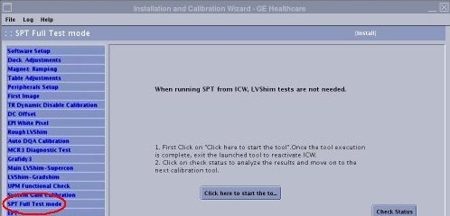
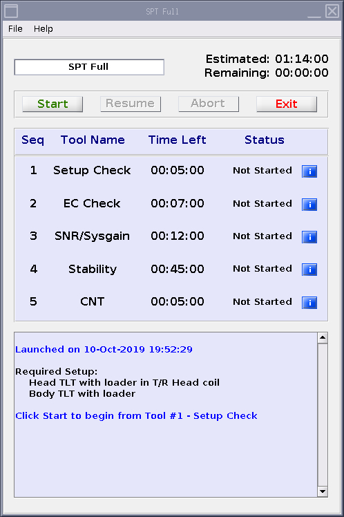

- 00000018WIA30378F20GYZ
- id_131065826.2
- May 13, 2022 4:50:46 AM
SPT Full Test Mode Procedure (For the system of SV25.2 and earlier)
Prerequisites
| Required persons | Preliminary requirements | Procedure | Finalization |
|---|---|---|---|
| 1 | Not Applicable | 2 hours | Not Applicable |
| Item | Quantity | Effectivity | Part number | Manufacturer |
|---|---|---|---|---|
| Body TLT Sphere | 1 | - |
46-265635G6 | - |
| Body Loader | 1 | - |
2135652-2 | - |
| Head TLT Sphere with Loader | 1 | - |
2125244 | - |
| Head loader positioner | 1 | - |
5110241 | - |
| Condition | Reference | Effectivity |
|---|---|---|
|
Cancel out of any previous exams. Click on End Exam. | - | - |
|
Remove any patient positioning devices before placing the nesting plate or other phantoms on the table. In particular, remove patient restraints or other devices that attach to the tracks along the edges of the cradle. | - | - |
Phantom Positioning for SPT Full Test Mode
About this task
If all tests will be run, these elements will be required:
Procedure
- The body sphere with body loader.
- Head coil.
- Head sphere and loader.
- Head loader positioner.
Phantom Setup
Procedure
- With landmark still set on the Head Loader,drive the table in
until the position reads 1135mm.
Figure 1. Distance Between Head Coil Landmark and Center line on Body Loader 
Invoking SPT Full Test Mode
Procedure
Start the SPT Tool.Notice 
-
If SPT will be started from ICW, select [Calibration Wizard] from the calibration menu and select [Click here to start this tool]. Once the Calibration Wizard starts, select [SPT Full Test Mode] from the menu, review and okay the pre & post-dependencies, and select [Click here to start this tool] to start the procedure.
Figure 2. SPT start from ICW 
-
If SPT is started from Service Browser / Image Quality, select [Image Quality] and [SPT Full Test Mode], and select [Click here to start this tool] to start the procedure.
Figure 3. Starting the SPT Test Tool 
-
- (For Software SV25.2 and before system) A SPT Test menu appears in a window on the desktop. Select appropriate test and start SPT. (see Figure 4).
- If SPT Full Mode is invoked from Installation and Calibration Wizard (ICW), set the [Select All Tests] option to [Yes]. Then, select a reason for the test and click Start SPT to begin.
-
To select all SPT tests, click [Yes] next to all tests fields.
-
To select a reason for the test, choose an option from the Test Purpose drop-down list. If desired, enter text in the Comments field.
-
Click Start SPT to begin.
-
- For troubleshooting, select individual tests as desired. Click No for set the [Select All Tests] option. Then, select a reason for the test. and click Start SPT to begin.
-
To select a reason for the test, click the button to the right of Test Purpose. Select a reason from the list. If desired, enter text in the Comments field.
-
Click the On button to select the test that you want to run.
-
To select Multiple Passes of the test(s), select the Multi Passes button, then enter the desired number of passes in the box that appears to the right.
-
Click Start SPT to begin.
You may be prompted to make additional selections as the test begins.
Status messages will appear in the text box below the menu as the tests are run. Use the scroll bar on the right side of the box to move up or down through the messages.
-
If desired, click the WhatFailed button. An example of WhatFailed output can be found in Troubleshooting.
Note: This screen will be displayed until you quit SPT, so if you're in a troubleshooting mode, all you need to do is press the Start SPT button to go again.
-
Figure 4. Field Engineer Test Selection - Full Test Example  (For SV25.3 and above system) Click start SPT to begin, the following items "Setup check", "EC Check", "SNR/Sysgain", "Stability" and "CNT" will be proceed automatically.
(For SV25.3 and above system) Click start SPT to begin, the following items "Setup check", "EC Check", "SNR/Sysgain", "Stability" and "CNT" will be proceed automatically.Figure 5. start SPT 
- If SPT Full Mode is invoked from Installation and Calibration Wizard (ICW), set the [Select All Tests] option to [Yes]. Then, select a reason for the test and click Start SPT to begin.
Finalization
Procedure
- Do a TPS Reset after completing SPT to put the system back into a know state.
- If for any reason a SPT scan is aborted, Shutdown and Reboot the system.